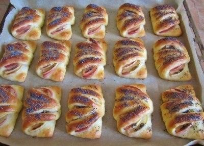

Table of Content:
Description:
Envelopes are simple to make: prepare a cottage cheese dough, as a filling I use apples, you can replace them with pears, dried fruits or come up with another stuffing, according to your taste
Ingredients:
- 150 gr. Сottage cheese
- 75 gr. Sugar
- 1 Chicken egg
- Little bit of Salt
- Little bit of Vanillin
- 6 tbsp. Sunflower oil
- 250 gr. Flour
- 1 pack. Baking powder
- 3 pcs. Apples
- 100 gr. Sugar
- 1 tsp. cinnamon
Directions:
- Mix Cottage cheese with sugar
- Add eggs, salt, oil, vanilla, baking powder
- Knead and cover with a towel for 20 minutes
- Divide the dough into 2 parts
- Roll out the 1st part in a circle - 24 cm and width - 5 mm
- Cut into 8 sectors. Make three incisions in each triangle
- On a wide edge we spread apples which are sprinkled with sugar and cinnamon
- Fold the narrow edge to the wide side, bending the bottom of the envelope
- Grease with egg yolk with milk and powder
- Bake at 180 degrees for 25 minutes
Result:
